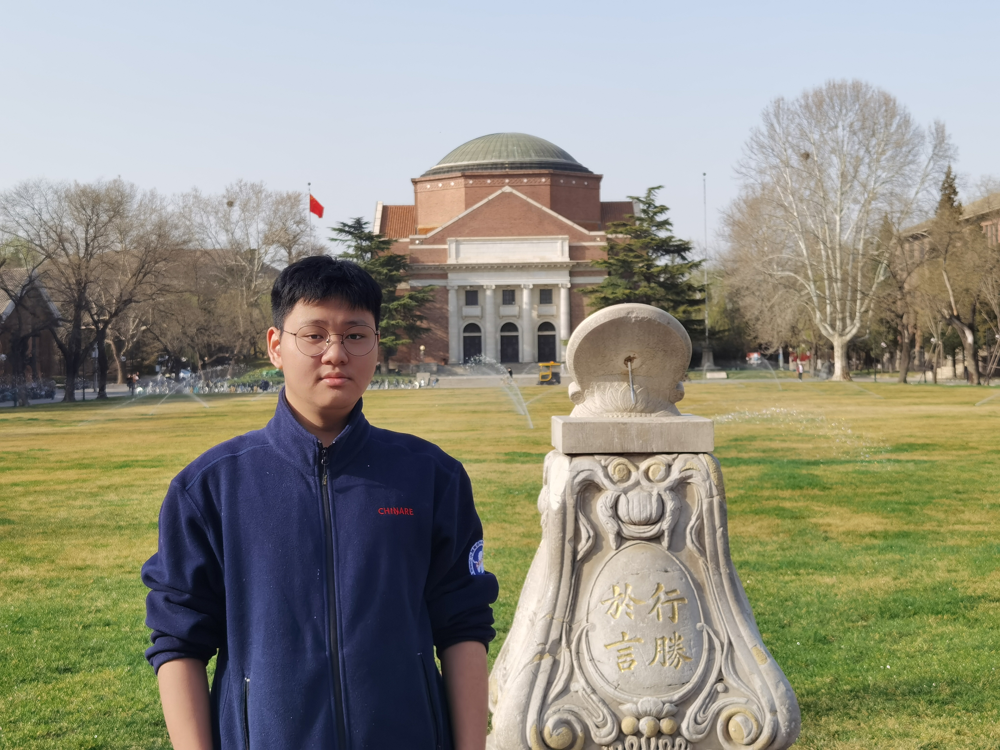
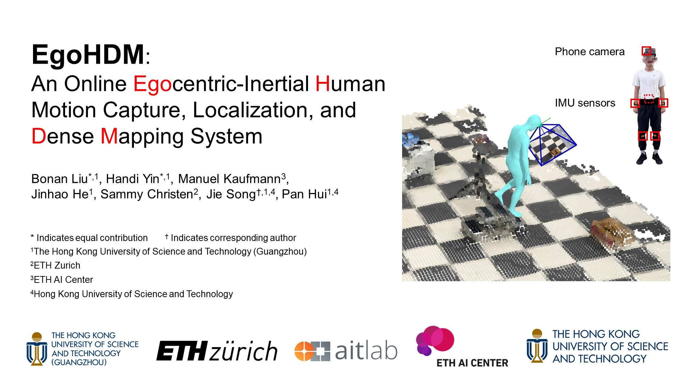
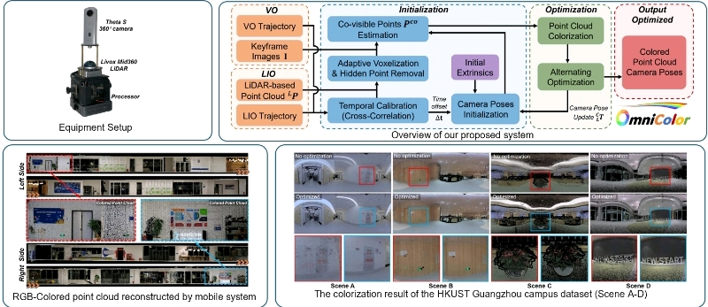
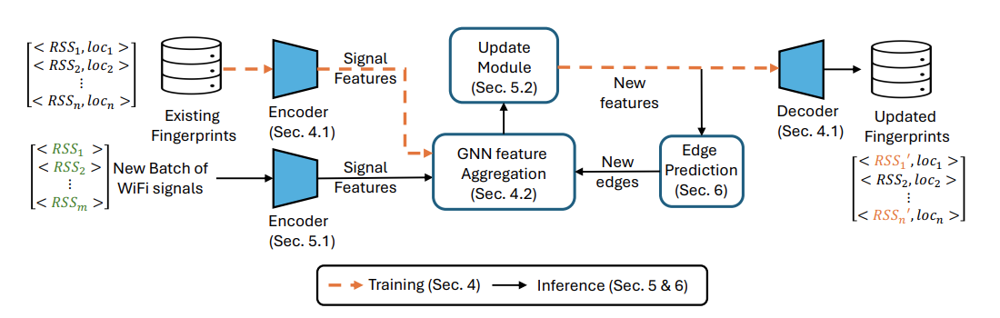

|
Handi YIN I'm a second year PhD student at ROAS Thrust, HKUST(GZ), in Guangzhou, China. Before that, I received my Master degree from CMA Thrust, HKUST(GZ) in 2024 and Bachelor degree from Department of EE, Tsinghua University in 2022. I'm currently supervised by Prof. Jie Song. |
 |
{kind=link}
News2025/03/24 I will be attending 3DV 2025 in Singapore. Looking forward to seeing you there! 2024/12/02 I will be presenting at SIGGRAPH Asia 2024 in Tokyo, Japan. If you're interested in my work, don't hesitate to reach out! |
Affiliation |
|
Tsinghua University
Bachelor of Science 2018 – 2022 Electronic Engineering. |
 MPhil 2022 – 2024 Computational Media and Arts. |
PhD Student 2024 – NOW Robotics and Autonomous Systems. |
ResearchMy current research mainly focuses on human motion capture and motion prior for robotics. |
|
 |
EgoHDM: An Online Egocentric-Inertial Human Motion Capture, Localization, and Dense Mapping System
Handi Yin*, Bonan Liu*, Manuel Kaufmann, Jinhao He, Sammy Christen, Jie Song^, Pan Hui SIGGRAPH Asia 2024 (TOG) 3DV 2025 Nectar Track project page / video / paper EgoHDM is an innovative online egocentric-inertial motion capture system that provides near real-time localization and dense scene mapping, enhancing human motion estimation in various terrains. |
|
 |
OmniColor: A Global Camera Pose Optimization Approach of LiDAR-360Camera Fusion for Colorizing Point Clouds
Bonan Liu, Guoyang Zhao, Jianhao Jiao, Guang Cai, Chengyang Li, Handi Yin, Yuyang Wang, Pan Hui^ ICRA 2024 Oral code / video / paper OmniColor colorizes point clouds with a 360-degree camera, optimizing camera poses for accurate image-to-geometry mapping without feature extraction, resulting in improved 3D reconstruction in robotic navigation and scene reconstruction tasks. |
|
 |
Graph-based Fingerprint Update Using Unlabelled WiFi Signals
Ka Ho Chiu, Handi Yin, Weipeng Zhuo, Chulho-Lee, S.-H. Gary Chan^ IMWUT (March 2025) paper In this work, we study the challenging problem of how to effectively update an existing fingerprint database given a batch of unlabelled (crowdsourced) signals that may consist of new APs. |